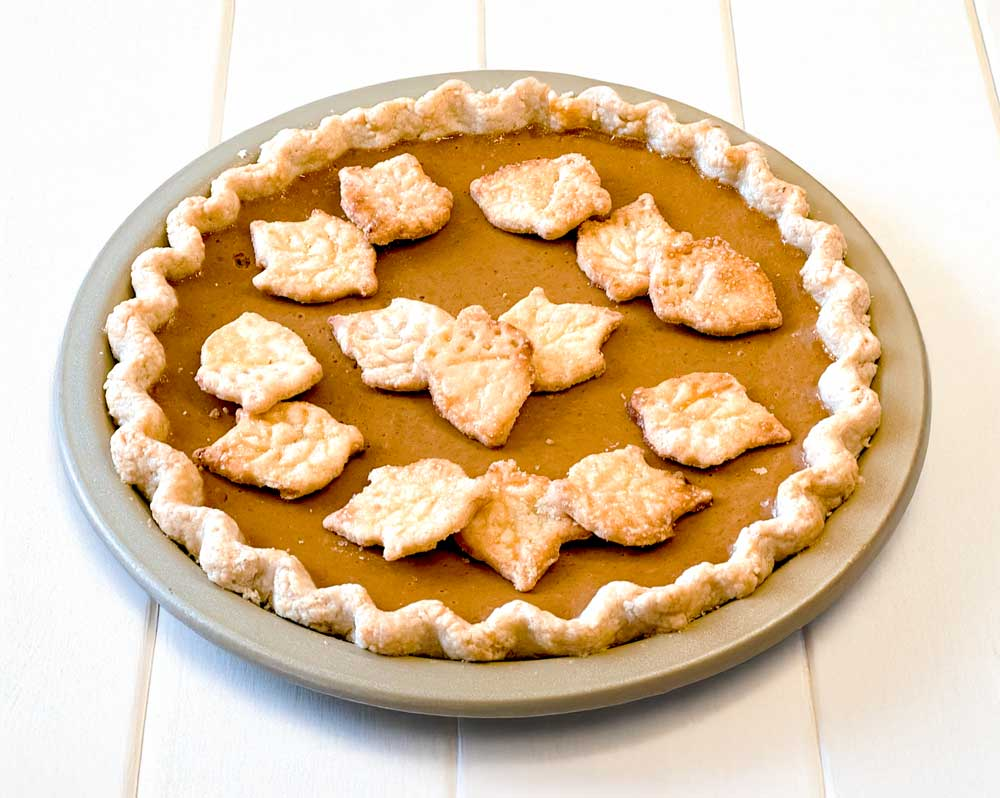
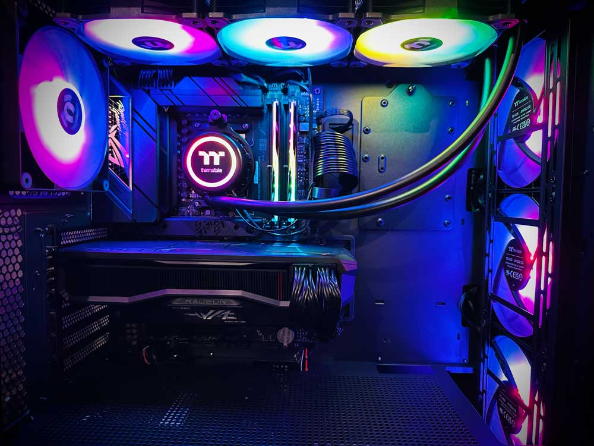
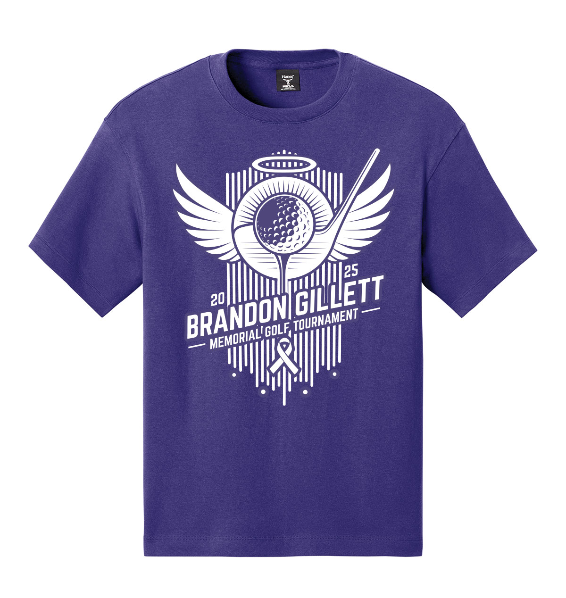
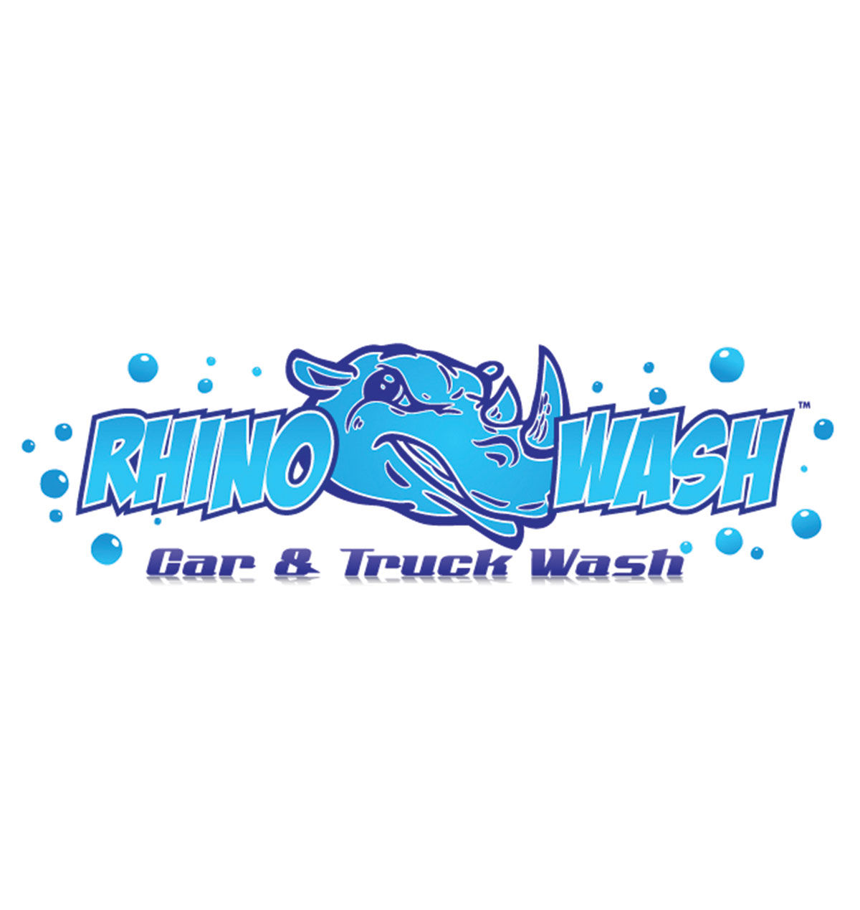

My Interests & Hobbies


Outside of my professional work, I enjoy a variety of hobbies that keep me creative, hands-on, and continuously learning. Some of my current interests include:
- Formula 1 & Motorsports Sim Racing
- I'm a motorsports enthusiast and enjoy following Formula 1 racing. I built a custom racing simulator at home, combining my interests in engineering, technology, and competitive driving.
- PC Building & Hardware Optimization
- I enjoy building custom PCs and staying up to date with the latest hardware. I regularly optimize systems for both productivity and gaming performance.
- Drone Piloting & Aerial Photography
- Beyond my professional drone work, I fly recreationally and enjoy experimenting with aerial photography and video as a creative and technical hobby.
- Baking
- Baking has been a longtime hobby of mine. Whether refining a favorite recipe or trying something new from scratch, I find it both relaxing and rewarding.
Creative Outlet


I have a long-standing background in graphic design and screen printing. I started Zepher Printing in high school, which eventually grew into The Zepher Company. Today, I focus primarily on commercial graphic design - creating logos, branding materials, and vehicle graphics for businesses. I install vinyl graphics, produce custom apparel, and sell promotional products to a wide range of clients across Kansas and beyond.